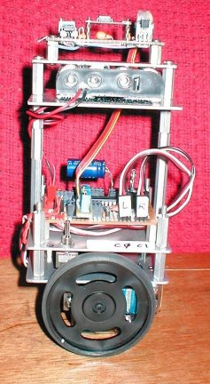
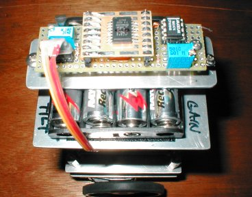
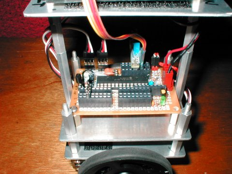
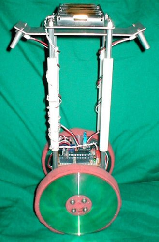
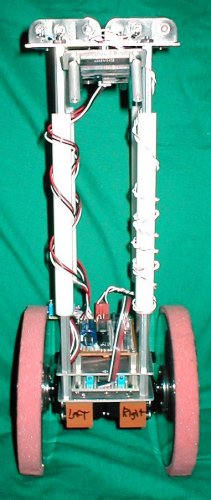
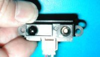
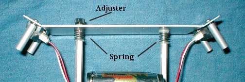
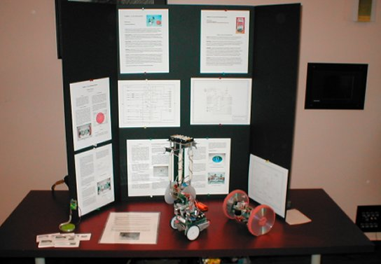
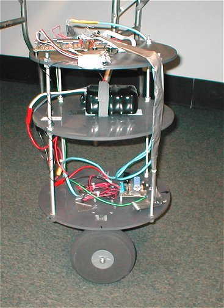

Balibot is the prototype of a two-wheeled robot that has its center
of gravity above the wheels. Without an active control system,
the
robot would just fall over. If the robot could sense its
direction
as it is falling, the wheels could move toward the fall and upright
itself.

Tilt Sensor: To measure the tilt
of the robot, a Motorola MMA2260 low G Accelerometer was used.
The
device consists of a micromachined structure formed from polysilcon
materials.
It can be described as two stationary plates with a movable plate
in-between.
The center plate moves as the device is subjected to tilt. The
output
is an analog voltage that is further amplified and conditioned by
circuitry
on the controller board.


Two Sharp GP2D12 sensors replace the silicon accelerometer. The sensors
are mounted on an aluminum strip just below the batteries and placed at
the front and back of the robot. The line of sight is toward the
ground at an angle. One inch spacers are used to hold and protect
the sensors. These photos were taken before moving the sensor bar to
the
top of the robot.

View of the Sharp GP2D12 "ET Sensor".
The sensor bar is now at the top of the robot instead of below the battery pack. Mounting the bar in this manner makes it easier to adjust the sensor to ground relationship. The increased height also adds "gain" to the feedback. Line of sight distance from sensor to ground is about 17 inches.

Sensor angle adjuster detail

Balibot, Cambot and Rollie at the 2003 National Conference of
Educational
Robotics, Norman OK
You can get these sensors (very good prices!) at the Mark III Robot Store
Movie of Balibot (Balibot falls over when the PIC resets due low
battery
voltage) Balibot.MOV
' PicBasic Pro program
' 10-bit A/D conversion
' Balancing robot using two "ET" sensors (Sharp GP2D12)
' Use analog inputs channel 0, 1, 2, 4
' Use a 16f876 pic mcu from microchip (www.digikey.com)
Define osc 20 'crystal speed 20 Mhz
'Define ADCIN and DEBUG
parameters
Define ADC_BITS 10 ' Set number of bits
in result was 10
Define ADC_CLOCK 3 ' Set clock source
(3=rc)
Define ADC_SAMPLEUS 50 ' Set sampling time to 50 microsecs
Define DEBUG_REG PORTB
Define DEBUG_BIT 5
Define DEBUG_BAUD 9600
Define DEBUG_MODE 1
Define DEBUG_PACING 500
tiltfor var
word
' ET Sensor Forward
tiltbac var word
' ET sensor Back
lwheel var word ' Left
wheel zero speed
rwheel var word ' Right
wheel zero speed
speed var
word
' speed variable
k con
7
' k factor (gain)
smax con
500
' speed limiter
TRISA =
%11111111
' Set PORTA to all input
ADCON1 = %10000010 ' Set PORTA analog
and right justify result
'lwheel=747 'zero calibrate left wheel
'rwheel=747 'zero calibrate right wheel
speed=0
start:
debug "Balbot4" 'send program name over debug
to ID program
pause 1000
high
portc.2
'flash led to indicate reset
pause 1000
low portc.2
adcin 1, lwheel 'read trimmer
for
left wheel zero speed setting
adcin 2, rwheel 'read trimmer
for right wheel zero speed setting
loop:
adcin 0, tiltfor 'read
A/D for forward sensor value
adcin 4, tiltbac 'read A/D
for back sensor value
speed = abs (tiltfor - tiltbac)* k
if speed > smax then speed =
smax
'limits maximum servo speed
if tiltbac > tiltfor then back
forward: 'PWM to drive servos forward
low portc.0
pulsout portc.0,(lwheel + speed) 'left wheel
pause 5
low portc.1
pulsout portc.1,(rwheel - speed) 'right
wheel
pause 5
goto loop
back: 'PWM to drive servos backward
low portc.0
pulsout portc.0,(lwheel - speed) 'left
wheel
pause 5
low portc.1
pulsout portc.1,(rwheel + speed) 'right wheel
pause 5
goto loop
End
Hex file for 16f876 ETbalibot.hex
Schematic (PDF) balibot.pdf
Nbot
David Anderson
LegWay
Steve Hassenplug Robot built with Legos
Joe
Built by Students at LEI (french)
Gyrobot
Larry Barello
Ted
Larson's Balancing Robot
Shown at the July 27, 2003 San Francisco Robotics Society Expo
